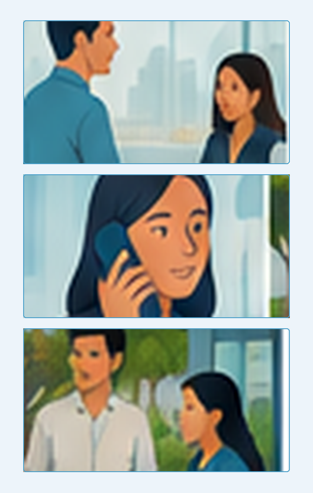

Antes de empezar
Es una forma de violencia que puede presentarse mediante conductas de naturaleza o connotación sexual o sexista dirigidas hacia otra persona de manera no deseada.
Forma de violencia
No debe reducirse a una "broma" o una simple incomodidad interpersonal.
Puede ser sexual o sexista
Puede manifestarse mediante distintos comportamientos físicos, verbales, gestuales u otros.
Es no deseada
La conducta se dirige hacia otra persona sin que esta la desee.
Palabras y mensajes
Comentarios, insinuaciones, proposiciones o expresiones de naturaleza sexual.
Imágenes y gestos
Gestos obscenos o exposición y envío de contenido de naturaleza sexual.
Acercamientos
Acercamientos corporales, roces, tocamientos u otras conductas físicas de naturaleza sexual no deseadas.
Beneficios a cambio de favores
Prometer directa o indirectamente un trato preferente o beneficio laboral a cambio de favores sexuales.
Amenazas o exigencias
Presionar o amenazar a una persona para obtener una conducta de naturaleza sexual no deseada.
Trato hostil después del rechazo
Responder con hostilidad o trato ofensivo frente al rechazo de una conducta de este tipo.
No se requiere que la conducta ocurra varias veces.
La persona afectada no necesita demostrar que previamente manifestó su rechazo.

Una posible situación de hostigamiento sexual laboral puede producirse:
Cuando ocurre en el marco de una relación laboral.
Un supervisor comienza a enviar a una persona de su equipo mensajes personales fuera del horario laboral. En varios mensajes comenta su cuerpo y le propone verse a solas. La persona responde únicamente los temas de trabajo y nunca le dice expresamente que se detenga.
¿Cuál es el criterio más adecuado para analizar esta situación?
No tiene que repetirse
Una conducta puede ser relevante aunque ocurra una sola vez.
No necesitas acreditar un rechazo previo
No es necesario demostrar que antes dijiste "no" o pediste que la conducta se detuviera.
Si enfrentas o conoces una posible situación, puedes comunicarla mediante cualquiera de estos canales:
Jefe inmediato
Comunica la situación a tu jefe inmediato.
Recursos Humanos
Puedes comunicarla directamente a Recursos Humanos.
Te escuchamos
Si deseas realizar un reporte anónimo: tescuchamos@drimer.com.pe
Durante una jornada de trabajo escuchas que un compañero realiza comentarios de contenido sexual hacia otra persona. La persona cambia de tema y continúa trabajando. Después, tu compañero te dice que "solo estaba bromeando".
¿Qué harías?
El procedimiento contempla distintas etapas para atender y evaluar la situación.
Recursos Humanos recibe la queja o denuncia.
El procedimiento contempla medidas de protección y la puesta a disposición de canales de atención para la persona afectada.
Se investigan los hechos y se valoran los elementos disponibles.
La investigación concluye y se determina lo que corresponda según los hechos evaluados.
Durante la investigación se respeta el debido procedimiento para ambas partes.
Reconoce
El hostigamiento sexual laboral no se limita al contacto físico.
Actúa
No es necesario esperar a que una conducta se repita ni acreditar un rechazo previo.
Comunica
Si te ocurre o conoces una posible situación, utiliza los canales disponibles.
Prevenir también significa saber reconocer una posible situación y actuar cuando corresponde.
Ahora puedes continuar con la evaluación del curso.